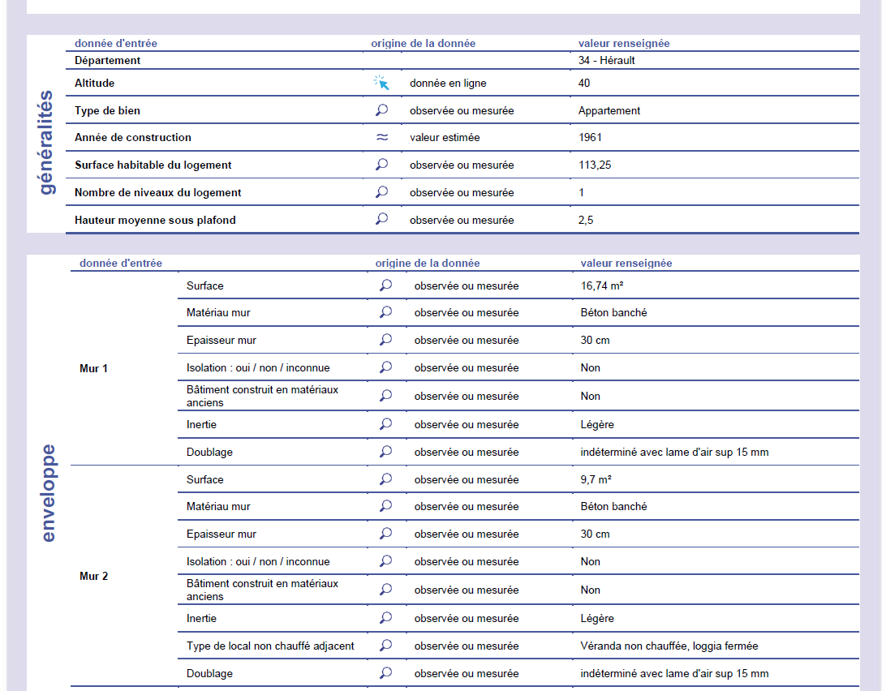
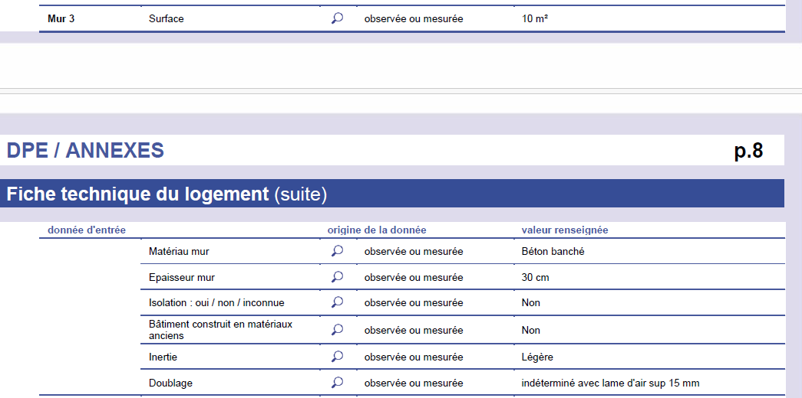
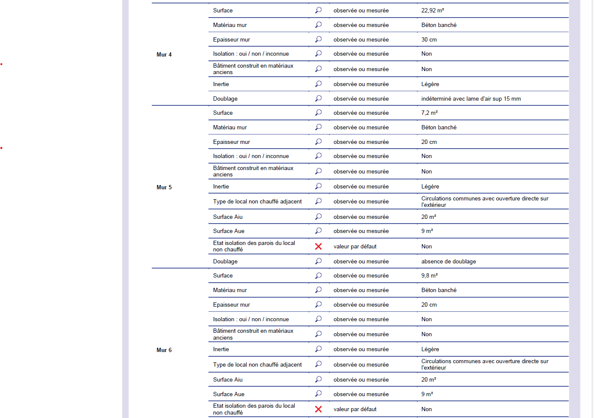
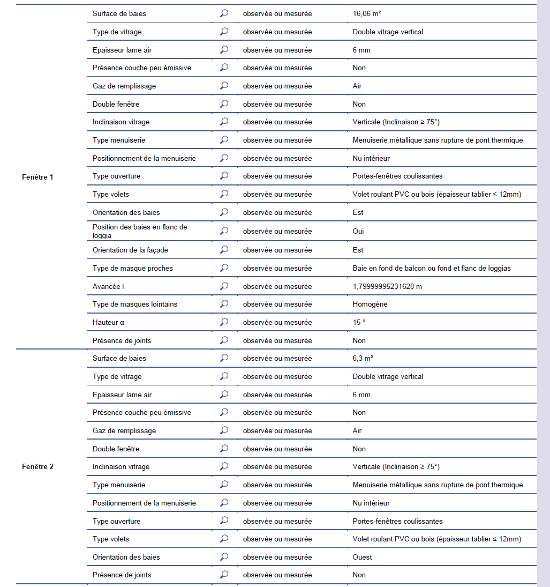
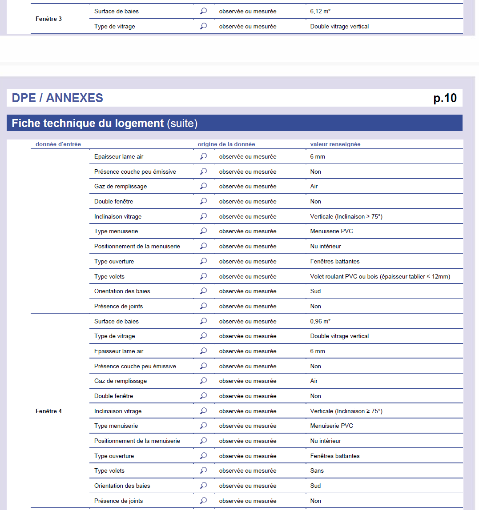

| murs et fenetres | ||||||
| id | desc | surf | haut | larg | comment | |
|---|---|---|---|---|---|---|
| mur_int_plan | ||||||
| sum | — | — | 29.20 | — | 11.68 | — |
| W4 | mur4.sud | 29.20 | 2.50 | 11.68 | NA | |
| mur_ext_plan | ||||||
| sum | — | — | 58.11 | — | 23.24 | — |
| W4 | mur4.sud | 31.20 | 2.50 | 12.48 | NA | |
| W3 | mur3.ouest | 26.91 | 2.50 | 10.76 | NA | |
| mur_expert | ||||||
| sum | — | — | 76.36 | — | 30.54 | — |
| W1 | mur1 | 16.74 | 2.50 | 6.70 | NA | |
| W2 | mur2 | 9.70 | 2.50 | 3.88 | veranda | |
| W3 | mur3 | 10.00 | 2.50 | 4.00 | NA | |
| W4 | mur4 | 22.92 | 2.50 | 9.17 | NA | |
| W5 | mur5 | 7.20 | 2.50 | 2.88 | NA | |
| W6 | mur6 | 9.80 | 2.50 | 3.92 | NA | |
| mur_linéaire | ||||||
| sum | — | — | 95.20 | — | 38.08 | — |
| LE | face_est | 38.38 | 2.50 | 15.35 | NA | |
| LW | face_ouest | 26.97 | 2.50 | 10.79 | NA | |
| LS | face_sud | 29.85 | 2.50 | 11.94 | NA | |
| ouverture_plan | ||||||
| sum | — | — | 15.16 | — | 7.10 | — |
| F3a | fenetre3-ouest | 3.48 | 2.32 | 1.50 | sud | |
| F3b | fenetre3-ouest | 3.48 | 2.32 | 1.50 | sud | |
| F4a | fenetre4-sud | 4.10 | 2.00 | 2.05 | ch2.sud | |
| F4b | fenetre4-sud | 4.10 | 2.00 | 2.05 | ch1.sud | |
| ouverture_expert | ||||||
| sum | — | — | 29.44 | — | 11.78 | — |
| F1 | fenetre1 | 16.06 | 2.50 | 6.42 | est | |
| F2 | fenetre2 | 6.30 | 2.50 | 2.52 | ouest | |
| F3 | fenetre3 | 6.12 | 2.50 | 2.45 | sud | |
| F4 | fenetre4 | 0.96 | 2.50 | 0.38 | sud | |
4 enveloppe du bâti
murs et ouvertures: il faudrait identifier sur le plan de masse les murs et les fenêtres, et confirmer un par un largeur et hauteur en vue d’un chiffrage de menuiserie et d’isolation intérieure. Alors qu’il existe 9 ouvertures individuellement cadrées, et que par ailleurs sur une triple exposition comment arriver à distinguer 6 murs ?
cas d’utilisation: les murs extérieurs de surface 95m2 possèdent des ouvertures pour 30m2; il reste 65m2 pour l’isolation intérieure.




